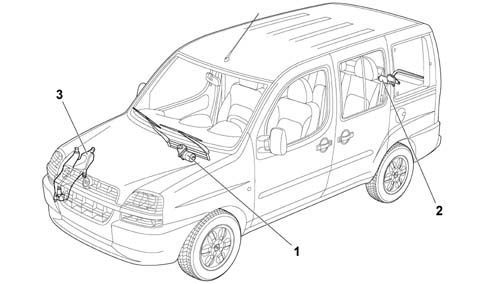
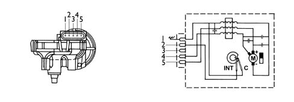
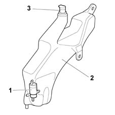

Introduction - SCREEN WASHERS AND HEADLAMP WASH/WIPE
- Path
- Descriptions > 50 AUXILIARY UNITS > 5050 SCREEN WASHERS AND HEADLAMP WASH/WIPE > Introduction - SCREEN WASHERS AND HEADLAMP WASH/WIPE
- Kind
- system description
- Applies to
- all engines; all production periods
- Interactive page
- https://sloeber94.github.io/elrnDB-fDbl/en/#/2585415
Applies to: all engines; all production periods
LOCATION OF COMPONENTS ON VEHICLE
The following diagram shows the components of the windscreen/rear window wash/wipe system

Applies to: all engines; all production periods
LOCATION OF COMPONENTS ON VEHICLE
1 Windscreen wiper
2 Rearscreen wiper
3 Reservoir
Applies to: all engines; all production periods
RESERVOIR
The reservoir, located on the left side panel under the wing, supplies the windscreen/rearscreen washer system pump with the necessary water/anti-freeze mixture for cleaning the front and rear windscreens.
The reservoir is the same on all versions. The only difference is that a different pump is fitted if a rear wiper is present.
The pump is either one-way (for outfits without a rear wiper) or two-way (for outfit with a rear wiper)
Reservoir capacity is 7 litres. The two-way pump supplies both spray units for the front windscreen and the rearscreen through two connected pipes.
Applies to: all engines; all production periods
WINDSCREEN WIPER/REAR WIPER
The windscreen wiper assembly is traditionally located in the service tank. In addition to the arm mechanisms, it includes an electric motor whose operation is controlled by the body computer.
The motor offers two operating speeds and comes with an electrical connection. Its layout is as shown below

Applies to: all engines; all production periods
WINDSCREEN WIPER/REAR WIPER
1 Power supply earth
2 Zero control
3 N.C.
4 Second windscreen wiper speed control
5. First windscreen wiper speed control
The rear wiper comes with only one speed setting and consists essentially of a motor secured to the rear door. Its threaded end is used to fit the wiper arm.
Applies to: all engines; all production periods
The reservoir, made from polythene plastic, is designed to be housed on the inside of the right front wheel arch. It comes with retaining tabs that allow effective, secure anchorage to the body.
The filler fitting is located on the upper part of the reservoir. This is easily accessible to facilitate filling and topping-up operations.
The polypropylene cap contains a filter element that prevents the introduction of impurities into the reservoir and a breather opening which does not allow fluid to escape.
The lower part of the reservoir contains a special housing for the electric pump and a rubber seal guarantees the perfect seal between the reservoir/electric pump.

Applies to: all engines; all production periods
1 Electric pump
2 Reservoir
3 Filler fitting
Applies to: all engines; all production periods
The window cleaning system is controlled by stalks on the steering wheel stalk unit.
The windscreen wiper d.c. motors are fitted with a cam secured to the actual motor which operates as an active earthed switch. At each rotation, this sends an earth signal to the control unit which thereby recognizes the end of travel position.
This same signal is used as a control parameter to protect the motors from overloading.
The body computer cuts off the electrical supply to the motor under the following circumstances:
- the control unit does not receive a cam switching signal within three seconds of motor activation (the motor cannot start);
- more than twenty seconds elapse after a switching command without a further switching command being received (the motor is locked by a sudden event).